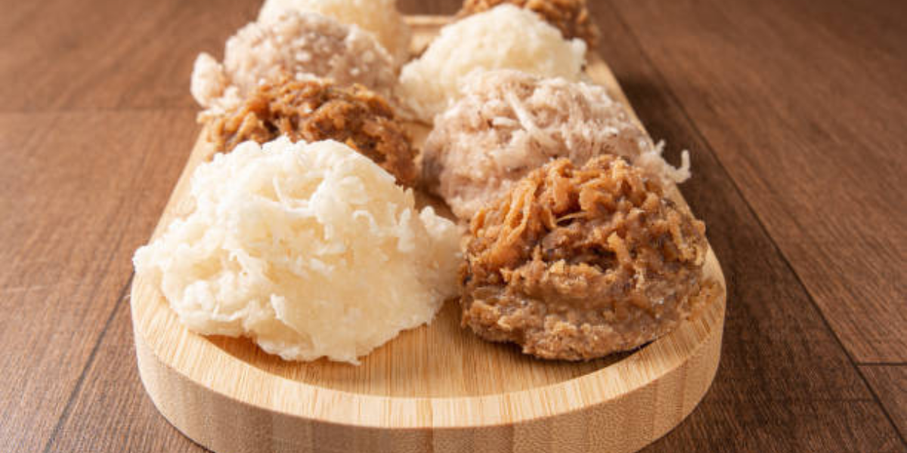

1️⃣Información.
Las cocadas son un dulce tradicional que se elabora principalmente a base de coco rallado y azúcar. Pueden tener diferentes variaciones dependiendo de la región, pero generalmente son pequeñas bolitas o barras de coco con una textura masticable y un sabor dulce.
Las cocadas tienen raíces en la cocina española y portuguesa, pero se han popularizado en muchos países de América Latina y el Caribe. En México, las cocadas son especialmente conocidas y se preparan de diversas maneras. En algunos lugares, las cocadas se cocinan hasta que están doradas, mientras que en otros se sirven frescas o incluso cubiertas de chocolate.
En algunos países de América Latina, las cocadas se conocen con diferentes nombres y pueden tener variaciones en los ingredientes y métodos de preparación. En Brasil, por ejemplo, se llaman "cocada" y se preparan con diferentes tipos de coco, mientras que en Filipinas se conocen como "buko" y a menudo se mezclan con leche condensada.
2️⃣Conoce más.
3️⃣Hazlo tú mismo.
Ingredientes.
- 2 tazas de coco rallado
- 1 taza de azúcar
- 1/2 taza de leche condensada
- 1/4 taza de mantequilla
- 1 cucharadita de esencia de vainilla (opcional)
Instrucciones:
- Precalienta el horno a 180°C (350°F) y coloca papel para hornear en una bandeja.
- En una cacerola a fuego medio, derrite la mantequilla.
- Agrega el azúcar y la leche condensada a la cacerola y mezcla bien hasta que el azúcar se disuelva completamente.
- Incorpora el coco rallado a la mezcla y sigue cocinando, removiendo constantemente, hasta que la mezcla se espese (unos 5-7 minutos).
- Si lo deseas, añade la esencia de vainilla y mezcla bien.
- Con la ayuda de una cuchara, forma pequeñas bolitas o montones de la mezcla y colócalos en la bandeja preparada.
- Hornea durante 10-12 minutos o hasta que las cocadas estén doradas.
- Deja enfriar las cocadas en la bandeja antes de trasladarlas a una rejilla para enfriar completamente.